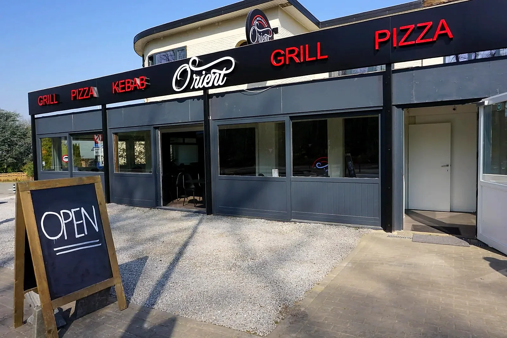
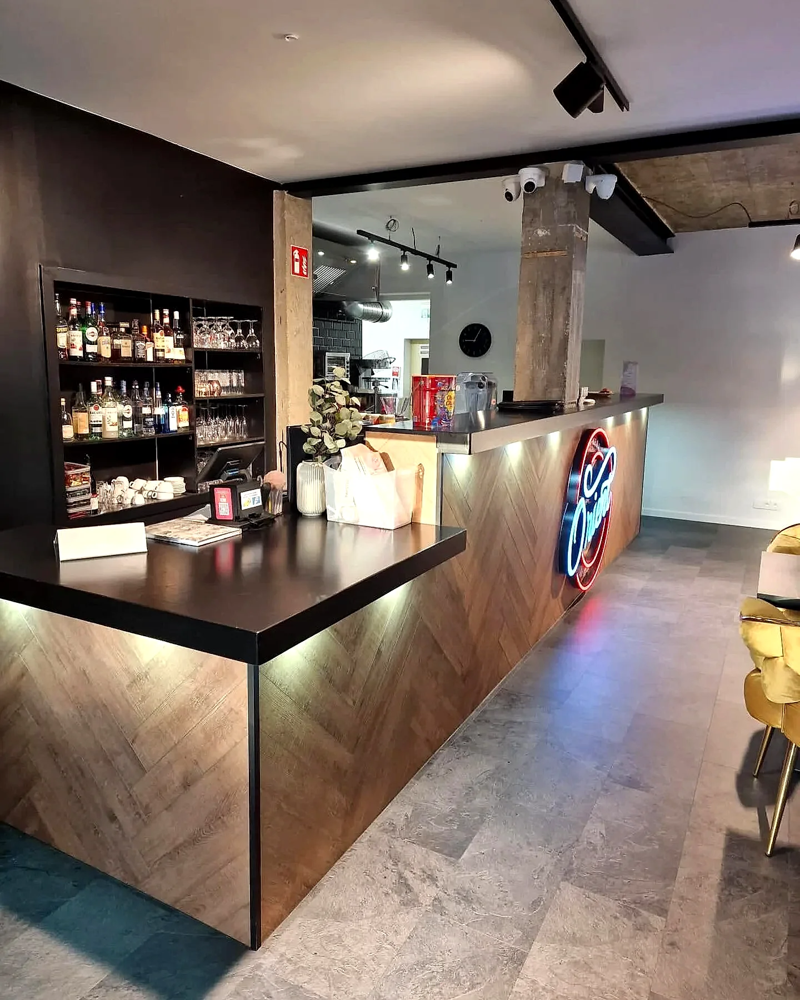
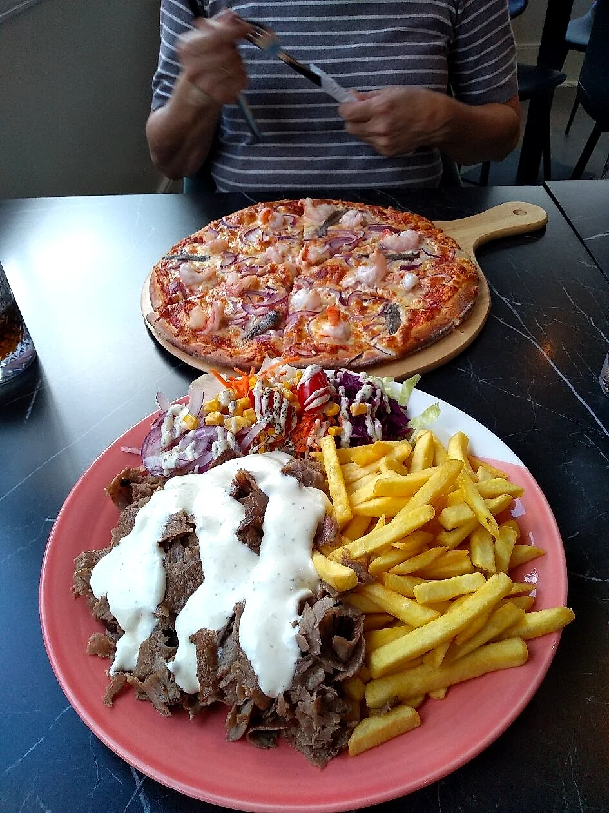
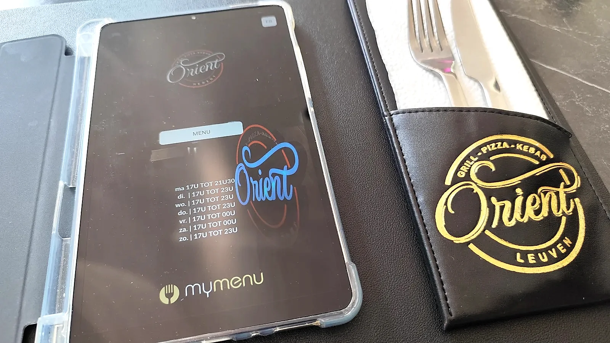
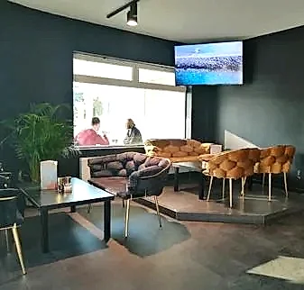

Herent · Brusselsesteenweg
Kwaliteitskebab, verse pizza en grill. Gemaakt om indruk te maken, niet om snel te zijn.
Orient Herent werd in maart 2022 geopend door Kaan Kandemir en Carolien Mariman, een jong koppel met één duidelijk doel: bewijzen dat kebab geen slechte naam verdient. Waar veel zaken op snelheid mikken, kiest Orient voor verse ingrediënten, een royale kaart en een zaak waar je ook gewoon rustig aan tafel gaat.
Het idee werkte: nog geen jaar later opende het koppel een tweede zaak op de Oude Markt in Leuven. In Herent blijft de basis dezelfde: grill, pizza en kebab, klaargemaakt zoals het hoort.
Naar de kaart
Bij ons draait het om meer dan snel iets meenemen. Schuif aan in een fluwelen zithoek onder de warme verlichting en laat je verwennen. Voor een snelle hap of een lange avond met vrienden en familie: je bent hier altijd thuis.



De kaart
Van verse dürüm tot pizza uit de oven. De volledige kaart met actuele prijzen staat op het bestelplatform; dit is een voorproefje.
Gratis parking vlak voor de deur. Ook mindervalide toegankelijk.